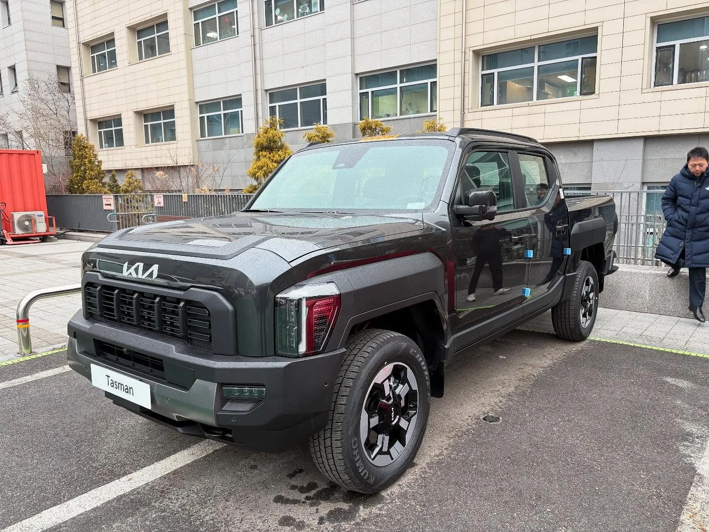

▲ 기아 타스만이 9월 재고 할인과 중복 혜택을 더해 최대 720만 원까지 할인 판매되고 있다 ⓒ 오토트리뷴
기아 픽업트럭 타스만이 9월 들어 파격적인 재고 할인에 들어갔다. 6월 생산분을 대상으로 한 기본 할인에 트레이드인·카드 혜택 등을 중복 적용하면 최대 720만 원까지 할인 폭이 벌어진다. 업계에서는 이 정도 가격이면 상대적으로 저렴했던 KGM 무쏘와도 실구매가 격차가 눈에 띄게 좁혀졌다는 평가가 나온다.
다만 할인은 재고 물량과 생산월 조건에 따라 달라지는 한시적 혜택이다. 정확히 어떤 항목이 얼마씩 겹쳐서 720만 원이 되는지, 무쏘와 비교하면 실제로 얼마나 유리한지, 그리고 지금 사도 되는 타이밍인지 짚어봤다.
1. 720만 원 할인, 어떻게 구성되나
타스만의 9월 할인은 단일 항목이 아니라 여러 혜택이 겹친 결과다. 오토트리뷴 보도에 따르면 기본이 되는 것은 2026년 6월 생산분 차량 대상 600만 원 재고 할인이며, 여기에 조건별 혜택을 더하면 최대 720만 원까지 늘어난다.
| 항목 | 할인 금액 | 조건 |
|---|---|---|
| 재고 할인 | 600만 원 | 2026년 6월 생산분 차량 대상 |
| 트레이드인 혜택 | 50만 원 | 기아 인증중고차 내차팔기로 기존 차량 매각 후 구매 시 |
| 현대카드 세이브오토 | 30만 원 | 현대카드 할부 상품 이용 시 |
| 기아멤버스 포인트 | 10만~40만 원 | 회원 등급·적립 회차에 따라 차등 |
| 합계(최대) | 720만 원 | 모든 조건 중복 충족 시 |
📍 720만 원을 다 받으려면 조건이 까다롭다
표에서 보듯 600만 원의 기본 할인은 6월 생산분 재고에만 해당한다. 여기에 기존 차량을 팔면서 갈아타야 트레이드인 50만 원이 붙고, 현대카드로 할부를 실행해야 30만 원이 추가된다. 즉 재고·결제수단·하차 여부까지 조건을 모두 맞춰야 최대 할인에 도달하는 구조다. 실제로는 조건에 따라 600만~720만 원 사이에서 할인폭이 갈릴 수 있다.
기아 타스만의 공식 트림별 가격은 기아 홈페이지에서 확인할 수 있다. 기아 타스만 가격 페이지 바로가기

▲ 타스만은 X-Pro를 포함해 다양한 트림으로 구성돼 있으며, 트림에 따라 할인 후 실구매가도 달라진다 ⓒ Kia
2. 타스만 vs 무쏘, 할인 받으면 진짜 비슷해지나
"이 가격이면 무쏘 잡는다"는 평가가 나온 이유는 정가 기준 두 차의 가격 차이가 상당했기 때문이다. 타스만은 기아가 지난달 250만 원 인하한 다이내믹 트림 기준 3,500만 원부터 시작하는 반면, 무쏘는 2,990만 원부터 시작해 500만 원 이상 차이가 났다. 그런데 타스만에 720만 원 할인이 들어가면 이야기가 달라진다.
| 구분 | 기아 타스만 | KGM 무쏘 |
|---|---|---|
| 시작가(정가) | 3,500만 원(다이내믹, 2.5 가솔린 터보) | 2,990만 원(2.0 가솔린 M5) |
| 엔진 | 가솔린 터보 2.5 | 2.0 가솔린 / 2.2 디젤 |
| 최상위 트림가 | 5,255만 원(X-Pro) | 4,170만 원(2.2 디젤 M9) |
| 9월 최대 할인 | 720만 원 | 별도 프로모션 상시 진행(차종별 상이) |
| 할인 후 시작가(추정) | 약 2,700만 원대 | 2,990만 원(정가 기준) |
📍 "잡는다"는 표현, 정확히는 이런 뜻이다
기본 트림 기준으로 단순 계산하면 720만 원 할인을 다 받은 타스만 실구매가가 무쏘 가솔린 기본 트림 정가보다 낮아지는 구간이 생긴다. 다만 이는 타스만 최대 할인 조건을 모두 충족했을 때의 추정치이며, 무쏘 역시 시기별로 별도 프로모션이 있을 수 있어 실제 협상가는 매장·시점마다 달라질 수 있다. 또한 두 차는 차체 크기, 파워트레인, 적재함 사양 등에서 차이가 있어 가격만으로 단순 비교하기는 어렵다는 점도 함께 고려해야 한다.

▲ 사진은 무쏘 EV 트림. 내연기관 무쏘는 2.0 가솔린·2.2 디젤로 판매되며 외관 디자인은 EV와 대체로 공유한다 ⓒ KGM
3. 왜 이렇게까지 할인하나 — 판매 부진과 재고 부담
이번 할인의 배경에는 예상보다 부진한 타스만의 판매 실적이 있다. 오토트리뷴 보도에 따르면 같은 기간 무쏘는 EV 모델을 제외하고도 8,587대가 팔려, 타스만보다 3배 넘는 판매량을 기록했다. 국내 픽업트럭 시장에서 후발주자인 타스만이 선두 자리를 확실히 가져가지 못하고 있는 셈이다.
✅ 판매 부진과 할인이 맞물리는 흐름
· 신차 초기 기대만큼 월 판매량이 따라오지 못하는 상황
· 6월 생산분 재고가 소진되지 않고 누적되면서 할인 필요성 증가
· 무쏘 등 경쟁 모델과의 실구매가 격차를 줄이려는 판촉 전략
· 9월 추석 시즌을 앞두고 완성차 업계 전반이 판매조건을 강화하는 시기적 요인도 겹침
실제로 기아는 타스만뿐 아니라 K8, EV6, EV9 등 다른 차종에도 9월 들어 대규모 판매조건을 내걸고 있어, 타스만 할인이 특정 모델만의 이례적 사례는 아니라는 시각도 있다.
4. 지금 사도 될까 — 구매 타이밍 조언
할인 폭이 클수록 "조금 더 기다려야 하는 것 아니냐"는 고민도 커진다. 실제로 최근 정가에 가까운 금액으로 타스만을 구매한 오너들 사이에서는 "몇 달 먼저 샀다는 이유로 수백만 원을 손해 봤다"는 반응이 온라인 커뮤니티를 중심으로 확산되고 있다.
📍 감가 걱정, 신차 구매자에게도 영향
신차 할인 폭이 커지면 기존 중고 매물의 시세도 동반 하락하는 경향이 있다. 한 차주는 "신차 효과를 누리기도 전에 감가부터 걱정해야 할 판"이라고 언급하기도 했다. 타스만을 이미 보유 중이라면 당장 되팔 계획이 없더라도 이런 흐름을 참고할 필요가 있다.
✅ 지금 구매를 고려한다면 확인할 것
· 계약하려는 차량이 6월 생산분(600만 원 기본 할인 대상)인지 딜러에게 직접 확인
· 트레이드인·카드 할부 조건을 실제로 충족할 수 있는지, 조건 미충족 시 할인폭이 얼마나 줄어드는지 미리 계산
· 재고 소진 시 할인 대상 생산월이 바뀌거나 할인폭 자체가 줄어들 수 있다는 점 고려
· 무쏘 등 경쟁 모델도 별도 프로모션이 걸려 있는 경우가 많으므로 같은 시점 기준으로 실구매가를 비교할 것
· 추석 이후에도 유사한 수준의 판매조건이 이어질지는 매장별 재고 상황에 따라 다르므로 사전 확인이 필요

▲ 할인폭이 큰 시기일수록 생산월·조건 충족 여부를 꼼꼼히 따져볼 필요가 있다 ⓒ Kia
5. 요약
기아 타스만은 9월 들어 6월 생산분 재고 할인 600만 원에 트레이드인·카드·멤버십 혜택을 더해 최대 720만 원까지 할인 판매되고 있다. 정가 기준 3,500만 원부터 시작하는 시작가가 조건에 따라 2,700만 원대까지 낮아지는 구조다.
이 정도 할인이면 상대적으로 저렴했던 KGM 무쏘와 실구매가 격차가 눈에 띄게 좁혀진다는 평가가 나오지만, 720만 원을 전부 받으려면 재고·결제수단·트레이드인 조건을 모두 충족해야 한다는 점은 유의해야 한다. 할인 배경에는 무쏘 대비 부진한 판매 실적과 재고 부담이 자리하고 있다.
구매를 고려 중이라면 계약하려는 차량이 실제로 할인 대상 생산월인지, 자신이 조건을 충족할 수 있는지를 먼저 확인하고, 이미 보유 중이라면 신차 할인이 중고 시세에 미칠 영향도 함께 감안하는 것이 좋다.